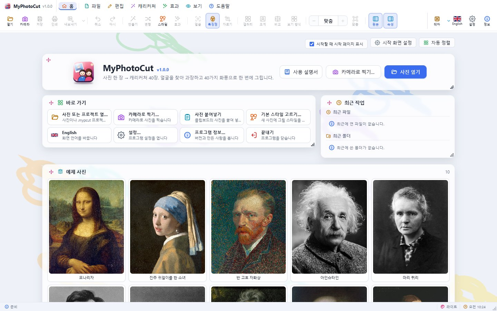
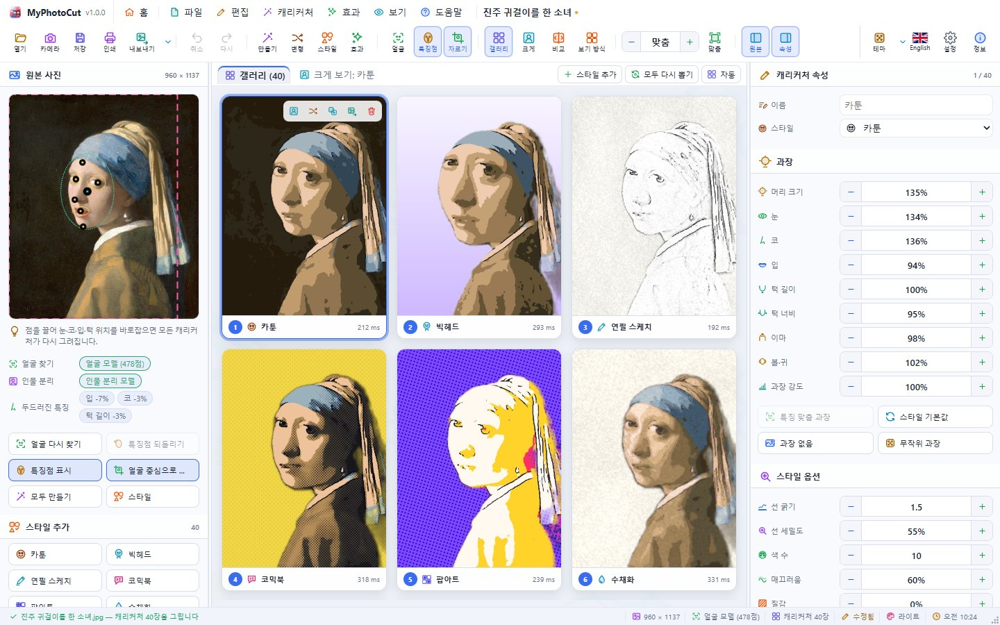
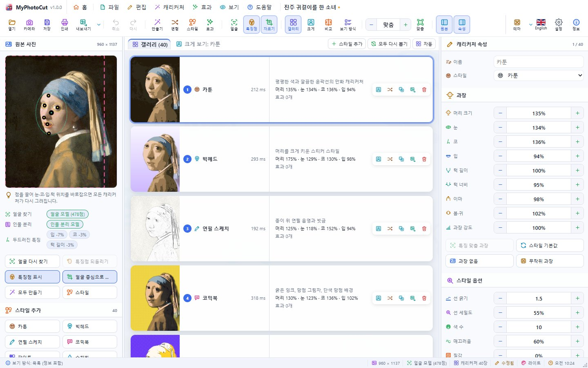
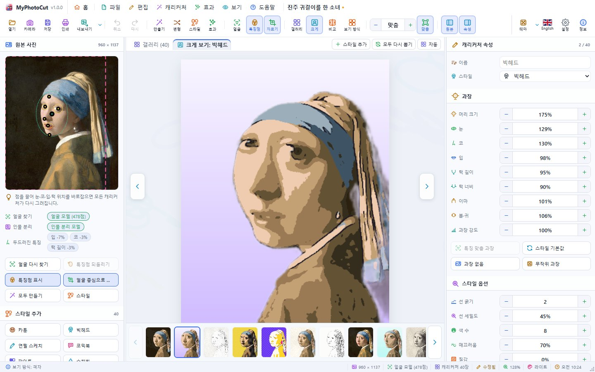
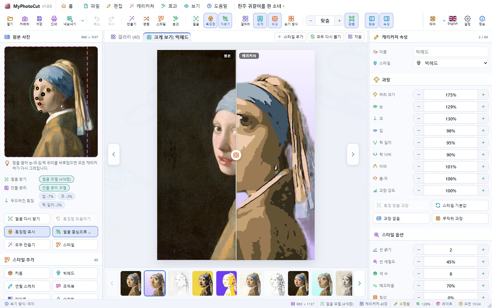
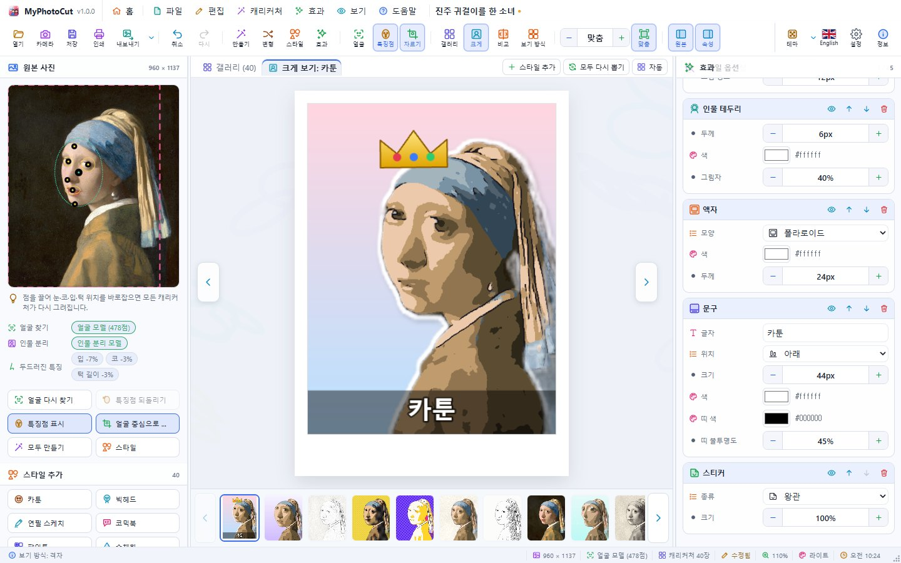
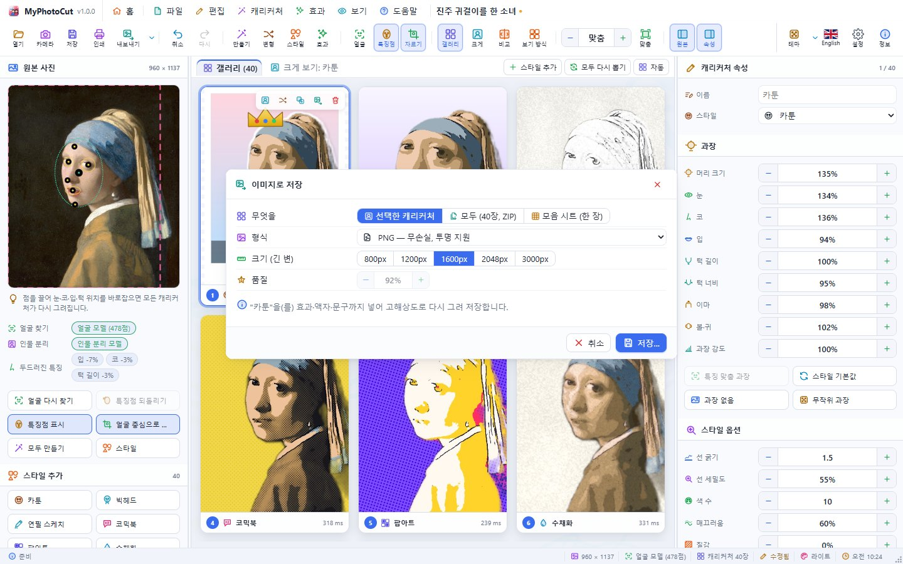
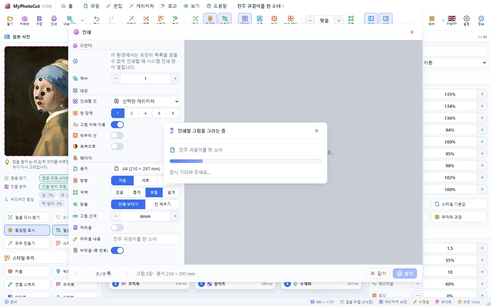

MyPhotoCut User's Guide
MyPhotoCut turns one photo into caricatures in forty styles at once. It runs the same way as a desktop app on Windows, macOS and Linux and in a web browser.
1. Getting started
- Open a photo: Open on the toolbar, Open a photo on the start page, drop a picture on the window, or press
Ctrl+V. - Camera: Camera takes a picture with the webcam (
Spaceshoots, Shoot in 3 s waits). - Sample photos: the start page has ten public-domain portraits (Mona Lisa, Girl with a Pearl Earring, Van Gogh, Einstein, Marie Curie, Lincoln, Douglass, Beethoven, Mozart, Lady with an Ermine).
The face, eyes, nose and mouth are found automatically (a 478-point face model that works offline), and one caricature is drawn in each chosen style (all forty by default).
Formats that open
JPEG, PNG, WebP, AVIF, GIF, BMP, ICO, SVG (read by the browser); TIFF, TGA, PSD, QOI, PPM/PGM/PBM (decoded by MyPhotoCut); .mypcut projects. HEIC depends on the system.
2. The window


| Area | What it holds |
|---|---|
| Menu bar | Name and version, Home (start page ⇄ work), File, Edit, Caricature, Effects, View, Help, the photo's name, window buttons |
| Toolbar | Icon and name for every button; a narrow window hides the names only |
| Left: Photo | The photo with its face points, how the face was found, find again, reset points, framing, 40 style buttons |
| Centre | Gallery, or the large view (compare with the photo, zoom, film strip) |
| Right: Caricature | Name and style, exaggeration, style options, effects |
| Status bar | Notices, drawings in progress, photo size, face method, theme, clock, resize grip |
3. Correcting the face points
Stands out (left panel) shows how this face differs from an average face (e.g. mouth +18 %). Fit to this face exaggerates those differences more (Settings › Caricature turns it on or off and sets its strength).
Drag the points on the photo (face centre, eyes, nose, mouth, chin, forehead); every caricature is drawn again. Reset face points goes back to what was found; Find face again starts over. Frame head and shoulders (Ctrl+J) crops a photo whose face is small (the pink dashed box).
4. Working with caricatures
- Select with a click or
←→;Enteropens the large view,Escreturns to the gallery. - Compare with photo (
Ctrl+K): drag the line between photo and caricature. - Layout (toolbar,
Ctrl+3): grid, large grid, small tiles, list with details, strip. - Make a variation (
Ctrl+R), Re-roll all, Duplicate (Ctrl+D), Rename (F2), Delete. - Make all (
F5) draws the chosen styles again (replace or add); Choose styles picks them (all 40 or the classic ten). - Exaggeration: head, eyes, nose, mouth, chin length, jaw width, forehead, cheeks (50–220 %) and overall strength (0–200 %).
- Style options: line weight, line detail, colours, smoothness, texture, background, random seed.



5. The forty styles
Cartoon, Big head, Pencil sketch, Comic book, Pop art, Watercolour, Ink pen, Oil painting, Chibi, Charcoal, Pixel art, Neon, Clay, Vintage poster, Manga, Coloured pencil, Mosaic tiles, Stained glass, Woodcut, Engraving, Crayon, Pastel, Gouache, Marker, Blueprint, Chalkboard, Thermal, Glitch, Retro handheld, Ukiyo-e, Noir, Duotone, Pop quad, Sticker, Low poly, Cubism, Cross-stitch, Graffiti, Ink wash, Paper cut.
6. Effects

Add effect stacks effects on the selected caricature; each can be switched off, moved or removed, copied to others or applied to all. Picture effects: adjust colours, new background, person outline, vignette, film grain, sepia, black and white, duotone, invert, blur, sharpen, glow, emboss, posterize, halftone, pixelate. Decorations: frame, caption, speech bubble, stickers.
7. Saving


- Save project (
Ctrl+S): the photo, the points and every caricature in one.mypcutfile. - Save as image (
Ctrl+E): the selected caricature, all of them (ZIP) or a contact sheet, at 800–3000 px, drawn again at full size. - Formats: PNG, JPEG, WebP, AVIF (where supported), GIF, BMP, TIFF, TGA, PPM, QOI, ICO (up to 256 px), PDF, SVG.
- Copy image (
Ctrl+Shift+C), Print (Ctrl+P).
8. Keyboard shortcuts
| Key | Action | Key | Action |
|---|---|---|---|
| Ctrl+O | Open | Ctrl+Shift+O | Camera |
| Ctrl+S | Save | Ctrl+E | Save as image |
| Ctrl+Z / Ctrl+Y | Undo / Redo | F5 | Make all |
| Ctrl+R | Variation | Ctrl+D | Duplicate |
| Ctrl+1 / 2 / 3 | Gallery / Large / Layout | Ctrl+K | Compare |
| Ctrl+J | Frame head | Ctrl+L | Face points |